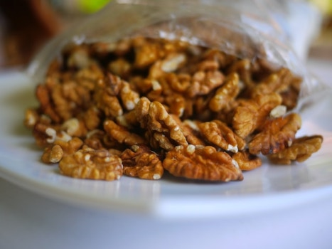

Butter Chicken Walnuts

Description
Has rich and salty depth of taste, like mini crunchy buttered pretzel bites.
Ingredients
- 2 cups raw shelled walnuts
- 2 tbsp butter melted
- 1 tbsp avocado oil
- 1 tsp Worcestershire sauce
- 1 tsp chili powder
- ¾ tsp brown sugar
- ½ tsp salt
- ½ tsp garlic powder
- ½ tsp onion powder
- ¼ tsp ground paprika
- ¼ tsp crushed red pepper
Steps
- Preheat oven to 255 degrees Fahrenheit.
- Prepare a baking sheet with parchment paper or foil.
- In a bowl mix butter, oil, Worcestershire sauce, chili powder, brown sugar, salt, garlic powder, onion powder, ground paprika, and crushed red pepper.
- Pour mixture over walnuts and gently toss to coat completely.
- Spread walnuts onto baking sheet.
- Bake for 30-45 minutes total, turning over and rotating walnuts every 10-15 minutes to ensure even cooking.
- Allow to cool and enjoy.
Recipe credit: Veggie Fun Kitchen